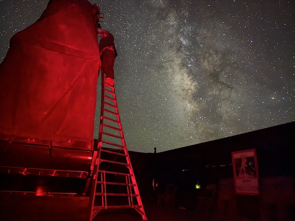
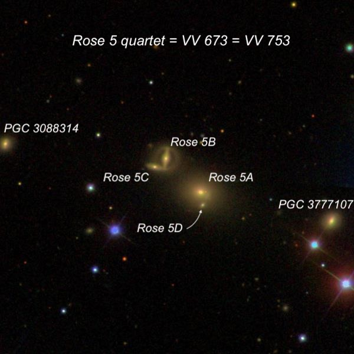
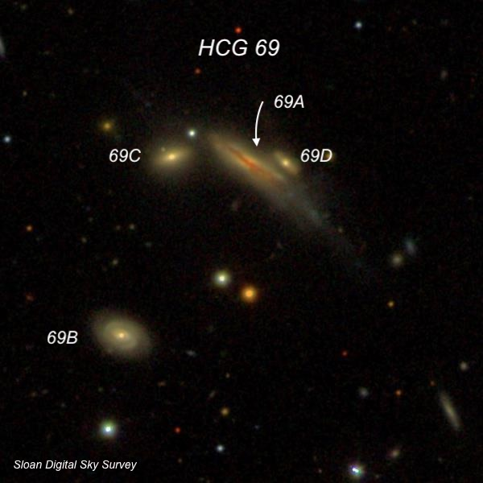
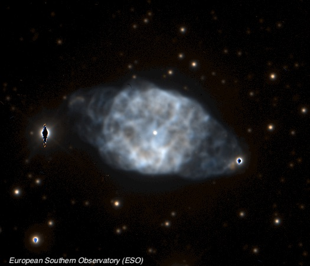
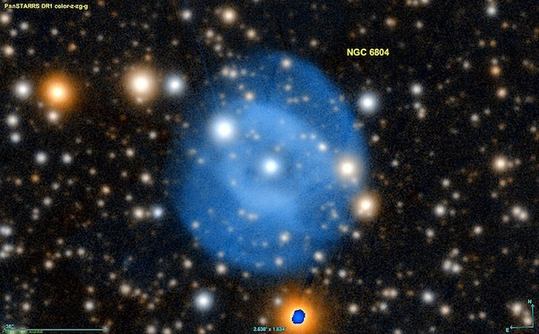
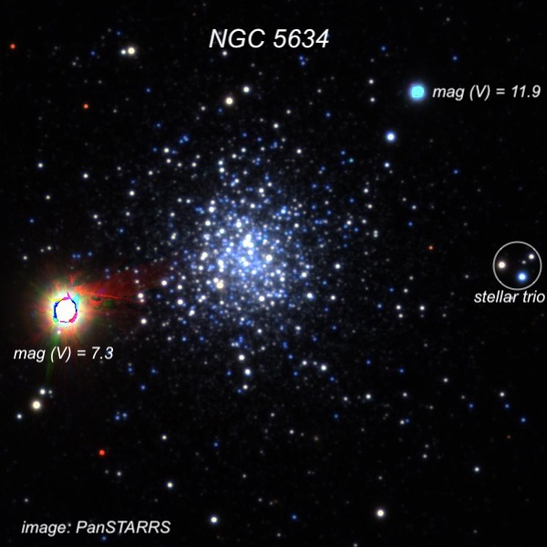
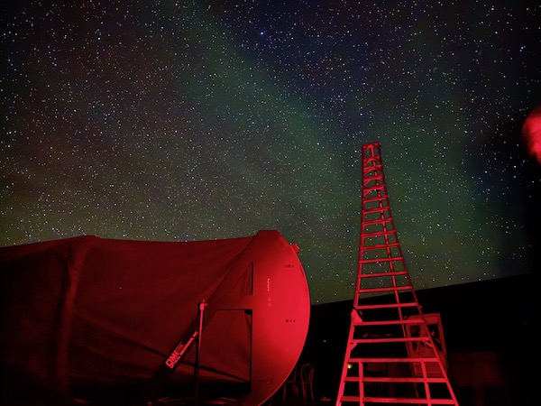

Deep Sky Delights from Texas – Part IV
Continuing Part III from Sunday night the 17th…here’s the view of the sky on Lowrey’s formidable 14-foot ladder.

Since I had suggested that we observe Rose 3 on Friday night and Rose 4 on Saturday, I figured, why not visit Rose 5 on Sunday night. This distant quartet lies in southern Ursa Major at a distance of roughly 600-650 million light-years. As with Rose 3 and 4, Rose 5 is teensy – a 1’ circle contains the entire quartet. In addition, two galaxies with a similar redshifts bracket the quartet to the WSW and ENE. So it appeared as a chain of six galaxies, with the central quartet consisting of two close pairs. The toughest was a tiny 17th-magnitude speck at the south edge of the brightest member, MCG +06-26-038.

Hickson Compact Group 69 (HCG 69) in Bootes is another faint quartet consisting of two late-type galaxies and two lenticulars. Its brightest and largest member, HCG 69a, displays a strong dust lane across its major axis on images. At 488x, it appeared as a moderately bright edge-on about 60" × 15", leaning towards the southwest. Although a very small brighter nucleus was seen, I couldn’t detect the narrow dust lane. HCG 69D, the faintest member, was seen as a very faint and extremely small glow at the west edge.

We ended the long night with two bright planetary nebulae. First up was NGC 6905 (the “Blue Flash”) in Delphinus, which I featured in last September’s Sky & Telescope article “A Deep Dive with the Dolphin.” It lies in a rich star field and when John Herschel observed the field in August 1831, he reported that four nearby stars appeared “like satellites.” In fact, he checked their configuration over three nights in the hope that they could be a new planetary system!
Through the 48-inch, the view at 697x was stunning. The planetary displayed a pale blue color, and a faint, but easily visible, central star. The disc was very slightly elongated and brighter on both the east and west end. A circular region around the central star was somewhat darker, although I could see slightly brighter triangular wedges extending from the center star to the east and west. Herschel’s stars, along with many others, huddled around the periphery.

William Herschel discovered the planetary NGC 6804 on August 25, 1791 and called it “considerably bright, small, irregular figure, easily resolvable. Some of the stars visible.” He mistakenly placed it is his class VI, which contains “Very compressed and rich clusters of stars.”
I found the structure fascinating with a thick, prominent oval annulus elongated from WSW to ENE. A 13th-magnitude star is embedded at the east-northeast end of the ring, and a 14th-magnitude star is at the very edge at the west-southwest end. The ring appeared more like two arcs connecting these two stars, as it dimmed at the ends of the major axis. A dark central hole was very evident around the 14th-magnitude central star. Finally, the planetary was encased in an oval outer halo with its major axis oriented NW-SE (roughly perpendicular to the bright ring).

The forecast called for clear skies on Monday night the 18th (the last of six nights), but we all had to wake up fairly early the next day, so this was planned as a short night, with the intention of stopping around midnight. That left about two hours for observing, but the crescent moon didn't set until close to 11:30. So, we made three early “warm-up” observations of M3, the globular NGC 5634 in Virgo, and the planetary nebula IC 972 in Virgo.
Even with the crescent moon in the western sky, NGC 5634 was a beautiful globular with 50 or more stars resolved at 375x. Several streams or chains of stars (many easily visible) extended from the central region, which was densely packed with faint stars over a bright, mottled background glow. A few dozen very dim stars constantly sparkled in and out of visibility. The halo extended about 4' in diameter, although the periphery lacked a distinct edge. Using 610x, the core was enlarged and was easier to resolve. A very bright orange field star (8th-magnitude K3-type HD 127119) is superimposed in the halo on the eastern side.

Once the moon had set, we again recorded SQM readings close to 21.9 MPSAS (magnitudes per square arc second). We looked at a couple of challenging targets and then admired the beautiful spiral structure in M100 and M99. We were close to calling it a night when Jimi noticed a very large band of light towards the south and we soon saw several such diffuse bands across the sky, some in a parallel formation.
I've never seen anything like this before, but Akarsh said the bands were atmospheric gravity waves. These occur when a stable layer of air is forced upward (perhaps by a mountain range), moving from a denser layer of atmosphere to a thinner one. Gravity causes the heavier blobs of air to fall back down, resulting in a periodic oscillation. In the few minutes it took to close the observatory and return to the house, the sky was seemingly covered with these waves or bands, making a dramatic ending to the trip.
